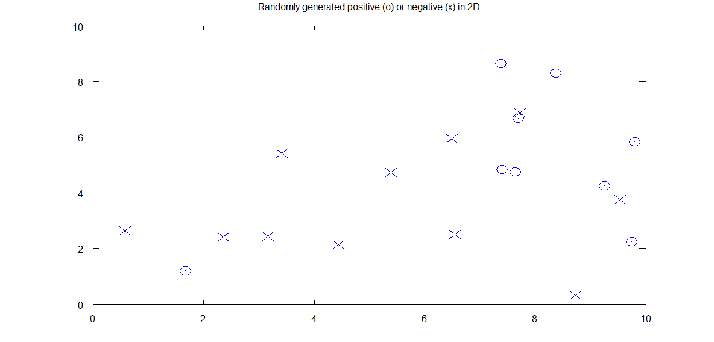
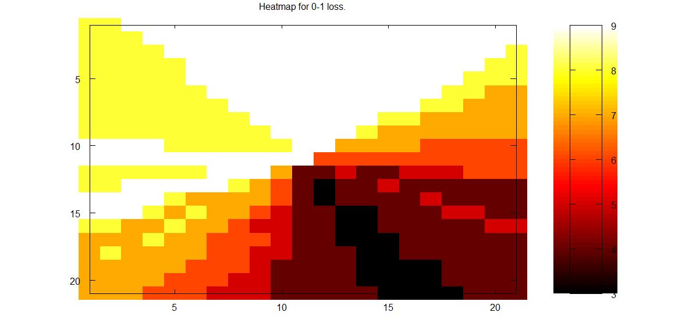

The Random Data

Heatmap for 0-1 Loss
X and Y axes represent the values of w1 and w2. w1 and w2 each took values in the range of -10 to 10
represented in this graph as 1 to 21. (-10 went into matrix index 1, 10 went into index 21.) See code below.

Heatmap for Hinge Loss
X and Y axes represent the values of w1 and w2. w1 and w2 each took values in the range of -10 to 10
represented in this graph as 1 to 21. (-10 went into matrix index 1, 10 went into index 21.) See code below.
Code [homework1.m]
function homework1 = homework1()
%Decision function = sign(w1x1 + w2x2 + b)
%Goal is to find b to minimize 0-1 loss = sum(.5(1-sign(f(x))y))
%Generate random data
figure(1);
X1 = rand(1,20)*10;
X2 = rand(1,20)*10;
A = rand(1, 20);
logical_B = A > .5;
X3 = +logical_B;
X3(X3==0) = -1;
examples = [X1; X2];
%Plot the data
scatter(X1(X3==-1), X2(X3==-1), "x")
hold on
scatter(X1(X3==1), X2(X3==1))
title("Randomly generated positive (o) or negative (x) in 2D");
hold off
%Calculate 0-1 loss and hinge loss for various values of w
w1 = -10:10;
w2 = -10:10;
table01 = zeros(numel(w1),numel(w2)); %Stores 01 loss for each tested w1 and w2 value
tableHinge = zeros(numel(w1),numel(w2));
for k = 1:numel(w1)
for j = 1:numel(w2)
optimalLoss01 = 10000; %0-1 loss can't be more than the number of examples
optimalLossHinge = 10000;
for b = -200:200
w = [w1(k) w2(j)];
decision = sign((w*examples).+b);
f = (w*examples).+b;
zero1loss = sum(decision ~= X3);
hingeLoss = sum(max(0, 1-f.*X3));
if(zero1loss < optimalLoss01) optimalLoss01 = zero1loss; end
if(hingeLoss < optimalLossHinge) optimalLossHinge = hingeLoss; end
end
table01(k, j) = optimalLoss01;
tableHinge(k, j) = optimalLossHinge;
end
end
%Heatmap for 0-1 loss
figure(2);
colormap("hot")
imagesc(table01)
colorbar
title("Heatmap for 0-1 loss.");
%Heatmap for hinge loss
figure(3);
colormap("hot")
imagesc(tableHinge)
colorbar
title("Heatmap for hinge loss.");
end
How are the results with 0-1 loss and hinge loss different?
Hinge loss uses the value for f(x) instead of the decision sign(f(x)).
0-1 loss is piecewise constant, hinge loss is not.
Hinge loss is convex, allowing for easier optimization.
Hinge loss continues to increase even as the maximum number of misclassifications has been reached, unlike 0-1 loss.